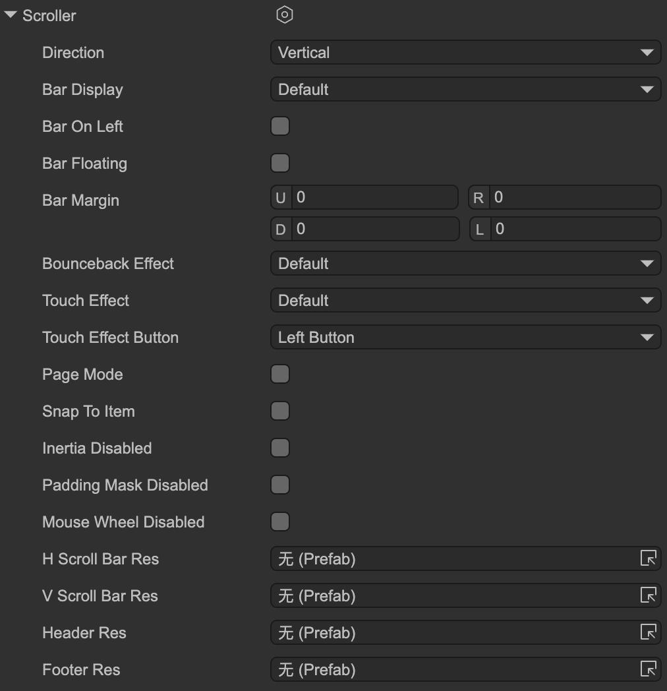

滚动支持
Author: 谷主
可以为GPanel以及它的派生类启用滚动支持，我们称之为Scroller。注意：Scroller和ScrollBar是不同的概念。Scroller可以为容器自动装配滚动条，也可以不装配，或者装配但隐藏。是否装配滚动条不影响正常的滚动功能。
一、编辑器操作

Direction滚动方向。Vertical垂直。Horizontal水平。Both同时支持垂直和水平两个方向。
Bar Display滚动条显示选项。Default使用默认值。默认值是UIConfig2.defaultScrollBarDisplay。Always始终显示。OnOverflow只在内容超出视口时才显示滚动条，否则隐藏。OnScroll只在产生滚动时才显示滚动条，否则隐藏。OnOverflowAndScroll只在内容超出视口，并且产生滚动时才显示滚动条，否则隐藏。Hidden始终隐藏。
Bar On Left是否将滚动条显示在左边。Bar Floating勾选后，滚动条不占据视口的位置，而是直接覆盖在视口上面。例如一个适用于手机的滚动条，它是细条且半透明的，只在滚动时才显示出来，用于提示滚动位置。那么我们把它设置为“浮动”，这样就不会挤占视口的显示空间。Bar Margin可以设置滚动条在容器中的位置，这是一个相对于正常位置的偏移值。Bounceback Effect滚动到达边缘时是否允许继续滑动/拖动一定距离，表现一个回弹的效果。一般在移动平台上使用，PC上较少。有些开发者会提出为什么我的滚动容器里内容没超出视口，却依然能滚动，这其实是边缘回弹效果。Default使用默认值。默认值是UIConfig2.defaultScrollBounceEffect。On打开回弹效果。Off关闭回弹效果。
Touch Effect触摸滚动效果。是否允许用户直接拖拽滚动区域内的内容。一般在移动平台上使用，PC上较少，PC上一般需要拖动滚动条，或使用鼠标滚轮。Default使用默认值。默认值是UIConfig2.defaultScrollTouchEffect。On打开 触摸滚动效果。Off关闭 触摸滚动效果。
Touch Effect Button如果勾选了Touch Effect，可以选择对哪个鼠标键生效。Page Mode页面模式。以视口大小为页面大小，每次滚动的距离是一页。一般在移动平台上使用，PC上较少，拖动滚动条进行滚动操作与这个模式冲突。Snap To Item滚动位置自动贴近元件。在滚动结束后，保证滚动位置刚好处于任意元件的上边缘（或左边缘）。Interia Disabled禁用惯性。当用手拖拽内容一段距离，并释放手指后，系统会根据手指移动的速度计算出一个速率，然后滚动会按照将此速率衰减到零的方式慢慢停下来，这称为惯性滚动。如果不需要此特性，可以关闭。这个功能是和“触摸滚动效果”配合使用的。Padding Mask Disabled禁用裁剪边缘。一般情况下，视口不包括边缘设置的部分，也即是容器设置四周的留空部分也会被裁剪。如果需要，可以勾选这个选项，使容器四周的留空部分不被裁剪。Mouse Wheel Disabled禁用鼠标滚动进行滚动。H ScrollBar ResV ScrollBar Res滚动条的资源。一般不需要设置，在项目设置面板的UI系统栏目里有一个全局的设置。如果你要使用不同于全局设置的滚动条资源，那么在这里设置。Header ResFooter ResHeader和Footer的资源。
二、常用API
Scroller常用的API有：
- Scroller常用的API有：
viewWidthviewHeight视口宽度和高度。contentWidthcontentHeight内容高度和宽度。percXpercYSetPercXSetPercY获得或设置滚动的位置，以百分比来计算，取值范围是0-1。如果希望滚动条从当前值到设置值有一个动态变化的过程，可以使用Set方法，它们提供了一个是否使用缓动的参数。posXposYSetPosXSetPosY获得或设置滚动的位置，以绝对像素值来计算。取值范围是0-最大滚动距离。垂直最大滚动距离=（内容高度-视口高度），水平最大滚动距离=（内容宽度-视口宽度）。如果希望滚动条从当前值到设置值有一个动态变化的过程，可以使用Set方法，它们提供了一个是否使用缓动的参数。pageXpageYpageXpageY如果滚动设置为页面模式，那么可以通过这些方法设置或者获得当前的页面索引。如果要获得页面数量，可以用contentWidth/viewWidth或者contentHeight/viewHeight。scrollLeftscrollRightscrollUpscrollDown向指定方向滚动N*step。例如，如果step=20，那么scrollLeft(1)表示向左滚动20像素，scrollLeft(2)表示向左滚动40像素。注意：如果滚动属性设置了贴近元件，例如元件大小为41像素，则需要滚动距离超过20像素，才能真正发生滚动，那么如果调用scrollLeft(1)，在step=20的情况下，会导致看不到任何效果。 如果滚动设置为页面模式，那这几个API也有“翻一页”的作用。scrollToView调整滚动位置，使指定的元件出现在视口内。step这个值是指滚动“一格”的距离。这个距离有三个用途：a）scrollUp/scrollDown/scrollLeft/scrollRight； b）点击滚动条的箭头按钮； c）鼠标滚轮，鼠标滚轮滚一次的距离是step*2。cancelDragging当滚动面板处于拖拽滚动状态或即将进入拖拽状态时，可以调用此方法停止或禁止本次拖拽。
可以侦听滚动改变，在任何情况下滚动位置改变都会触发这个事件。
aPanel.scroller.on(Laya.UIEvent.Scroll, ()=> {} );